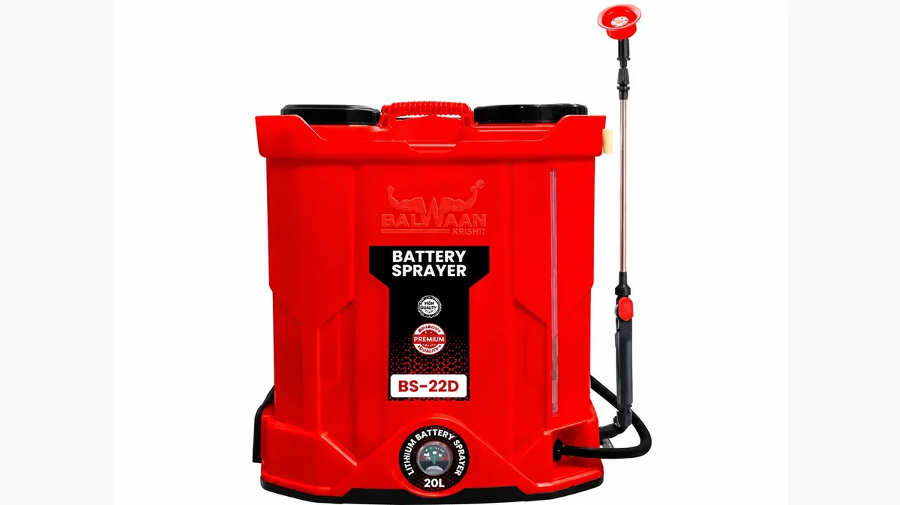

यूरिया का छिड़काव
Foliar Urea Spray — Dose per Pump, Crop Stage & Timing
छिड़काव में मात्रा का सवाल किलो का नहीं, ग्राम प्रति लीटर का है। 2% घोल यानी 15 लीटर के पंप में 300 ग्राम — इससे गाढ़ा घोल असर नहीं बढ़ाता, पत्ती जलाता है।
✍️ Kunal Rajput — KrashiMitra⏱️ 9 मिनट पढ़ें📅 अगस्त 2026

छिड़काव का पंप — यूरिया के घोल की मात्रा इसी टंकी के लीटर से तय होती है, अंदाज़े से नहीं।
मात्रा तौलिए, अंदाज़ा मत लगाइए
🧮
20 ग्राम/लीटर
2% घोल का हिसाब
🪣
300 ग्राम
15 लीटर पंप में
☀️
दोपहर नहीं
धूप में पत्ती जलती है
📖
भूमिका
फसल पीली पड़ रही हो और खेत में पानी न हो, या फिर दाना भरने का समय आ गया हो — इन दोनों हालात में यूरिया का पत्तियों पर छिड़काव वह काम कर देता है जो ज़मीन में डाली गई यूरिया नहीं कर पाती। पत्ती से ली गई नाइट्रोजन कुछ ही घंटों में पौधे के काम आने लगती है, जबकि ज़मीन वाली यूरिया को पहले घुलना, फिर बदलना और फिर जड़ तक पहुँचना होता है।
पर यहीं सबसे ज़्यादा गलतियाँ भी होती हैं। "थोड़ी ज़्यादा डाल देते हैं, असर ज़्यादा होगा" — यही सोच हर साल हज़ारों खेतों की पत्तियाँ जलाती है। छिड़काव में मात्रा का सवाल किलो का नहीं, ग्राम प्रति लीटर का है, और उसमें थोड़ी सी ज़्यादती सीधा नुकसान करती है। इस लेख में — कितने प्रतिशत का घोल, पंप में कितने ग्राम, किस फसल में कब, और वे हालात जहाँ छिड़काव करना ही नहीं चाहिए।
विज्ञापन
🧮
2% घोल का मतलब — पंप में कितने ग्राम
प्रतिशत का हिसाब बहुत सीधा है और एक बार समझ लेने के बाद कभी अंदाज़ा लगाने की ज़रूरत नहीं पड़ती। 1% घोल का मतलब है 10 ग्राम खाद, 1 लीटर पानी में। इससे आगे सब गुणा है:
घोल
प्रति लीटर
15 लीटर पंप में
16 लीटर पंप में
0.5% (बहुत कोमल फसल)
5 ग्राम
75 ग्राम
80 ग्राम
1% (सब्ज़ी, दलहन, कोमल पत्ती)
10 ग्राम
150 ग्राम
160 ग्राम
2% (गेहूं, धान, सरसों — सबसे आम)
20 ग्राम
300 ग्राम
320 ग्राम
3%
30 ग्राम
450 ग्राम
480 ग्राम
💡
अनाज वाली फसलों में 2% ही मानक है — यानी 15 लीटर के पंप में 300 ग्राम यूरिया। एक एकड़ में हाथ वाले पंप से आम तौर पर 12–14 पंप लग जाते हैं, यानी करीब 200 लीटर घोल। इससे ज़्यादा गाढ़ा घोल असर नहीं बढ़ाता, सिर्फ पत्ती जलाता है।
घोल बनाने का तरीका भी मायने रखता है — पहले टंकी आधी पानी से भरिए, फिर यूरिया डालकर अच्छी तरह घोलिए, फिर बाकी पानी। सूखी टंकी में पहले यूरिया डालने पर दाने नीचे बैठकर पूरी तरह नहीं घुलते और नोज़ल जाम करते हैं। घुलते समय घोल ठंडा हो जाता है — यह सामान्य है, यूरिया का अपना गुण है।
🎯
छिड़काव कब सचमुच काम आता है
यह ज़मीन वाली यूरिया की जगह लेने वाली चीज़ नहीं है — यह उसके ऊपर की एक तेज़ मदद है। इन हालात में यह सबसे ज़्यादा काम आता है:
पानी न हो: बारानी खेत या सिंचाई का साधन न होने पर ज़मीन में डाली यूरिया घुलती ही नहीं। छिड़काव तब भी काम करता है।
फसल पीली पड़ रही हो और असर जल्दी चाहिए: पत्ती से ली गई नाइट्रोजन कुछ घंटों में असर दिखाना शुरू करती है।
दाना भरने का समय: गेहूं और सरसों में दाना भरते समय का 2% छिड़काव दाने का वज़न और चमक सुधारने के लिए बहुत आम संस्तुति है।
दलहन में फूल और फली की अवस्था: जब जड़ की गाँठें ढलान पर होती हैं और फली भरनी होती है।
खड़ी फसल जिसमें अब घुसना मुश्किल है: जहाँ गुड़ाई या मिट्टी चढ़ाना अब सम्भव नहीं।
जलभराव या पाला पड़ने के बाद: जड़ें कमज़ोर होने पर पौधा ज़मीन से पोषक तत्व ठीक से नहीं ले पाता; पत्ती वाला रास्ता तब भी खुला रहता है।
⚠️
छिड़काव पूरी नाइट्रोजन की ज़रूरत नहीं पूरी कर सकता। एक एकड़ के छिड़काव में जितनी यूरिया जाती है वह ज़मीन वाली खुराक के मुकाबले बहुत कम है। इसे आधार खुराक का विकल्प मत समझिए — यह टॉप ड्रेसिंग की मदद है, उसकी जगह नहीं।
🌾
फसलवार — कितना घोल और कब
फसल
घोल
सही अवस्था
गेहूं
2%
बाली निकलने से दाना भरने तक; पीलापन दिखे तो कल्ले बनते समय भी
धान
2%
कल्ले बनने और गभोट की अवस्था; जलभराव के बाद भी उपयोगी
सरसों
2%
फूल आने और फली भरने के समय
मक्का
2%
घुटने की ऊँचाई से नर मंजरी निकलने तक
चना, मसूर, मूँग, अरहर
1–2%
फूल आने और फली भरने के समय; कोमल किस्मों में 1% से शुरू करें
सब्ज़ियाँ (भिंडी, बैंगन, गोभी)
1%
बढ़वार की अवस्था; पत्ती कोमल होती है, इसलिए कम रखें
कपास
2%
फूल-डोडी बनने की अवस्था
फल के पेड़ (आम, अमरूद, नींबू)
0.5–1%
नई पत्ती आने पर; पहले एक-दो डाल पर आज़माकर देखें
⚠️
ऊपर दी मात्राएँ सामान्य संस्तुति हैं। आपकी किस्म, फसल की अवस्था और मौसम के हिसाब से यह बदल सकती हैं — छिड़काव से पहले अपने KVK या कृषि विभाग से पुष्टि कर लीजिए, और नई फसल या नई किस्म में पहले थोड़े हिस्से पर आज़माकर 2–3 दिन देखिए, फिर पूरे खेत में कीजिए।
विज्ञापन
🚿
छिड़काव का सही तरीका
समय — शाम या सुबह: दोपहर की धूप में बूँदें पत्ती पर सूख जाती हैं और नमक की तरह जमकर पत्ती जलाती हैं। तापमान ज़्यादा हो तो छिड़काव मत कीजिए — शाम का समय सबसे सुरक्षित है क्योंकि घोल पत्ती पर ज़्यादा देर गीला रहता है और सोखा जाता है।
नोज़ल — महीन फुहार: मोटी बूँदें पत्ती से टपककर ज़मीन पर गिर जाती हैं। छिड़काव के लिए फ्लैट फैन या कट नोज़ल सही रहता है, कीटनाशक वाला मोटा नोज़ल नहीं।
पत्ती के नीचे भी: पत्ती की निचली सतह ज़्यादा तेज़ी से सोखती है। पंप की छड़ी को थोड़ा तिरछा करके नीचे तक फुहार पहुँचाइए।
हवा देखकर: तेज़ हवा में घोल उड़ जाता है और बँटवारा असमान हो जाता है। शांत मौसम चुनिए।
बारिश का अनुमान: छिड़काव के 4–6 घंटे के भीतर बारिश हो गई तो घोल धुल जाता है। मौसम देखकर तय कीजिए।
टंकी की सफाई: उसी पंप में पहले खरपतवारनाशी इस्तेमाल हुआ हो तो बचा हुआ अंश फसल जला देता है। पंप अच्छी तरह धोकर ही भरिए।
अंतर: दो छिड़कावों के बीच कम से कम 10–15 दिन का अंतर रखिए। लगातार छिड़काव से फायदा नहीं बढ़ता।
💡
छिड़काव के लिए बारीक दाने वाली या घुलनशील यूरिया बेहतर रहती है। मोटे दाने घुलने में समय लेते हैं और अधूरे घुले दाने नोज़ल जाम करते हैं। घोल बनाने के बाद उसे कपड़े से छानकर टंकी में डालना एक पुरानी और काम की आदत है।
🔬
पत्ती क्यों जलती है — बाइयूरेट की बात
यूरिया बनाते समय उसमें बाइयूरेट नाम का एक यौगिक थोड़ी मात्रा में बन जाता है। ज़मीन में डालने पर यह कोई समस्या नहीं है, पर पत्तियों पर सीधे पड़ने पर यही पत्ती को जलाता है — पहले किनारे भूरे होते हैं, फिर धब्बे फैलते हैं।
नियम की सीमा: उर्वरक नियमों के तहत यूरिया में बाइयूरेट अधिकतम 1.5% तक ही हो सकता है।
छिड़काव के लिए बेहतर: जितना कम बाइयूरेट, उतना सुरक्षित। जहाँ मिल जाए, कम बाइयूरेट वाली यूरिया छिड़काव के लिए चुनिए — फल के पेड़ और कोमल पत्ती वाली फसलों में यह ज़्यादा मायने रखता है।
पर असली वजह अक्सर यह नहीं होती: ज़्यादातर मामलों में पत्ती जलने का कारण बाइयूरेट नहीं, गाढ़ा घोल और दोपहर की धूप होता है। मात्रा और समय सही रखिए तो 2% का छिड़काव सुरक्षित रहता है।
⚠️
पहली बार में पूरा खेत मत कीजिए। थोड़े हिस्से पर छिड़काव कीजिए, 2–3 दिन पत्तियाँ देखिए, और तभी आगे बढ़िए। यह एक कदम पूरे खेत का नुकसान बचा सकता है।
🚫
ये गलतियाँ कभी न करें
अंदाज़े से मात्रा डालना — "एक-दो मुट्ठी" वाली आदत सबसे बड़ी दुश्मन है। तराज़ू या नापने वाला ढक्कन इस्तेमाल कीजिए; 15 लीटर के पंप में 2% के लिए 300 ग्राम।
दोपहर की धूप में छिड़काव — बूँदें पत्ती पर सूखकर जलन पैदा करती हैं। शाम या सुबह ही।
यह मानना कि गाढ़ा घोल ज़्यादा असर करेगा — असर नहीं बढ़ता, नुकसान बढ़ता है।
फूल की पूरी अवस्था में तेज़ छिड़काव — कई फसलों में खिले फूलों पर तेज़ घोल गिरने से झड़न बढ़ती है। संस्तुत अवस्था का पालन कीजिए।
खरपतवारनाशी वाले बिना धुले पंप में घोल भरना — बचा हुआ अंश फसल जला देता है, और नुकसान यूरिया के सिर मढ़ दिया जाता है।
ज़मीन वाली खुराक छोड़कर सिर्फ छिड़काव पर निर्भर रहना — छिड़काव से इतनी नाइट्रोजन नहीं जाती कि पूरी फसल चल जाए।
बारिश से ठीक पहले छिड़काव — 4–6 घंटे में बारिश हो गई तो पूरा घोल और मेहनत दोनों बह जाते हैं।
बिना सुरक्षा के छिड़काव — मुँह-नाक ढकिए, हाथ धोइए, और खाली टंकी को खेत की नाली या तालाब में मत धोइए।
🗓️
छिड़काव के दिन का क्रम
चरण
क्या करें
एक दिन पहले
मौसम देखिए; पंप धोकर सुखाइए; नोज़ल जाँचिए
तौलते समय
15 लीटर के लिए 2% यानी 300 ग्राम — अंदाज़े से नहीं, तौलकर
घोल बनाते समय
आधी टंकी पानी → यूरिया → अच्छी तरह घोलें → बाकी पानी → छानकर भरें
छिड़काव
शाम या सुबह, शांत हवा में, महीन फुहार, पत्ती के नीचे तक
पहली बार
थोड़े हिस्से पर करके 2–3 दिन पत्तियाँ देखिए
बाद में
पंप और कपड़े धोइए; बचा घोल खेत में ही खत्म कीजिए, नाली में नहीं
अगला छिड़काव
10–15 दिन के अंतर पर, ज़रूरत दिखे तभी
✅
निष्कर्ष
तीन बातें याद रखिए। पहली — अनाज वाली फसलों में 2% यानी 15 लीटर के पंप में 300 ग्राम; सब्ज़ी और कोमल पत्ती वाली फसलों में 1%, और फल के पेड़ों में इससे भी कम। दूसरी — शाम या सुबह ही छिड़कें; दोपहर की धूप में वही घोल पत्ती जला देता है जो शाम को फायदा करता है। तीसरी — यह टॉप ड्रेसिंग की मदद है, उसकी जगह नहीं; ज़मीन वाली खुराक अपनी जगह ज़रूरी है।
गाढ़े घोल से असर नहीं बढ़ता — सिर्फ पत्ती जलती है और मेहनत बेकार जाती है।
विज्ञापन
❓
अक्सर पूछे जाने वाले सवाल
1यूरिया का 2% घोल कैसे बनाएँ?
1 लीटर पानी में 20 ग्राम यूरिया — यही 2% घोल है। यानी 15 लीटर के पंप में 300 ग्राम और 16 लीटर के पंप में 320 ग्राम। पहले आधी टंकी पानी भरिए, यूरिया डालकर अच्छी तरह घोलिए, फिर बाकी पानी मिलाकर छानकर भरिए।
2एक एकड़ में यूरिया छिड़काव के लिए कितना पानी और कितनी यूरिया चाहिए?
हाथ वाले पंप से आम तौर पर करीब 200 लीटर घोल यानी 12–14 पंप लगते हैं। 2% घोल पर यह लगभग 4 किलो यूरिया प्रति एकड़ बैठता है। फसल की ऊँचाई और पत्तियों की सघनता से यह मात्रा कुछ ऊपर-नीचे होती है।
3यूरिया का छिड़काव किस समय करना चाहिए?
शाम को, या सुबह जल्दी — जब धूप तेज़ न हो और हवा शांत हो। दोपहर की धूप में बूँदें पत्ती पर सूखकर जम जाती हैं और पत्ती जला देती हैं। छिड़काव के बाद 4–6 घंटे तक बारिश न हो, वरना पूरा घोल धुल जाता है।
4गेहूं में यूरिया का छिड़काव कब करें?
गेहूं में सबसे आम संस्तुति बाली निकलने से दाना भरने तक 2% यूरिया का छिड़काव है, जिससे दाने का वज़न सुधरता है। अगर कल्ले बनते समय ही फसल पीली पड़ रही हो और सिंचाई का साधन न हो, तब भी 2% का छिड़काव किया जा सकता है।
5क्या यूरिया का छिड़काव ज़मीन में डालने की जगह ले सकता है?
नहीं। एक एकड़ के छिड़काव में लगभग 4 किलो यूरिया ही जाती है, जो ज़मीन वाली खुराक के मुकाबले बहुत कम है। छिड़काव टॉप ड्रेसिंग की मदद है, उसका विकल्प नहीं — यह तेज़ असर देता है, पूरी ज़रूरत नहीं भरता।
6छिड़काव के बाद पत्तियाँ जल क्यों जाती हैं?
दो कारण — घोल ज़रूरत से ज़्यादा गाढ़ा होना, और दोपहर की धूप में छिड़काव। तीसरा कारण यूरिया में मौजूद बाइयूरेट है, जिसकी नियम के तहत अधिकतम सीमा 1.5% है। मात्रा तौलकर रखिए, शाम को छिड़किए, और पहली बार थोड़े हिस्से पर आज़माकर 2–3 दिन देखिए।
7सब्ज़ियों और फल के पेड़ों में कितने प्रतिशत का घोल दें?
सब्ज़ियों में 1% यानी 10 ग्राम प्रति लीटर, और फल के पेड़ों में 0.5% से 1% तक। इनकी पत्ती अनाज वाली फसलों से ज़्यादा कोमल होती है, इसलिए 2% का घोल यहाँ जलन कर सकता है। नई किस्म में हमेशा कम से शुरू करें।
8क्या यूरिया को कीटनाशक या दूसरी दवा के साथ मिलाकर छिड़क सकते हैं?
बिना पुष्टि के नहीं। कुछ मिश्रण आपस में क्रिया करके असर खो देते हैं या पत्ती जला देते हैं। मिलाना ही हो तो पहले दवा के लेबल पर मिश्रण की जानकारी पढ़िए और अपने KVK से पुष्टि कीजिए। पंप में पहले खरपतवारनाशी इस्तेमाल हुआ हो तो उसे अच्छी तरह धोए बिना कभी न भरें।
🌾
KrashiMitra.in — आपका विश्वसनीय कृषि साथी
मंडी भाव, सरकारी योजनाएं, बीज-खाद की जानकारी और फसल रोग उपचार — सब कुछ हिंदी में।